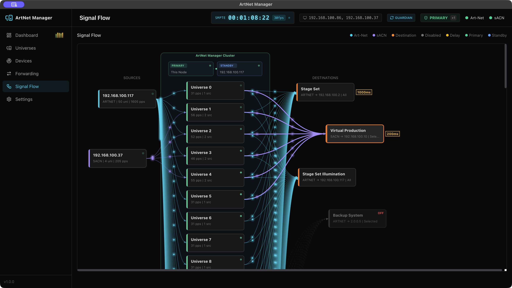
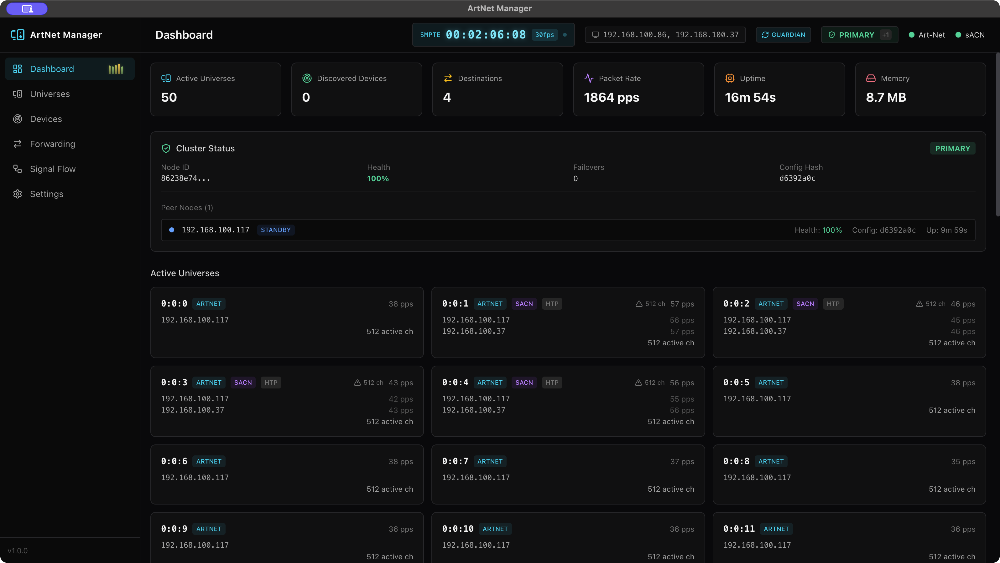
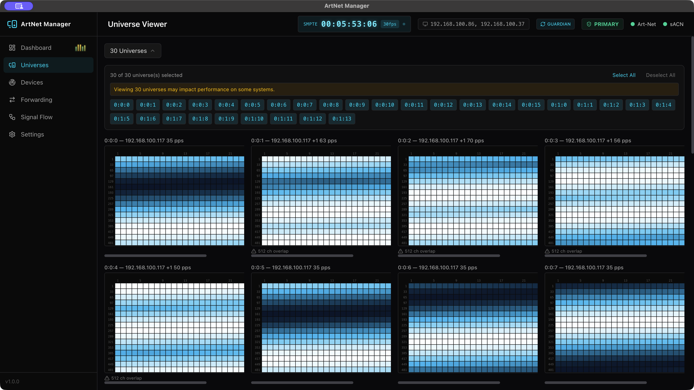
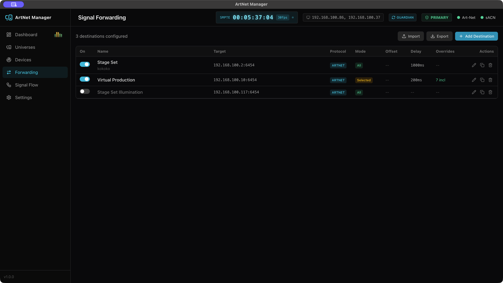
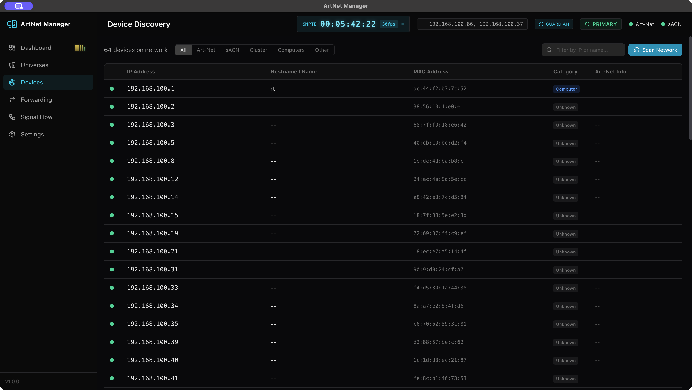

Art-Net / sACN 信号の管理・可視化・フォワーディングを一元化。ミニマムだけど強力な、ライブプロダクション現場のための DMX ツール。

余計な機能は持たない。DMX信号の受信・マージ・監視・変換・転送を、シンプルなインターフェースに凝縮。
512チャンネルをグリッドでリアルタイム表示。色分けされたインテンシティで、信号の変化を瞬時に把握。マルチユニバース同時表示にも対応。
Art-Net 4 と sACN (E1.31) の両方に対応。プロトコル間の変換・ブリッジも自動で処理。
複数ソースの DMX 信号を HTP（最大値優先）/ LTP（最新値優先）/ Priority で自動マージ。DMXking/ENTTEC eDMX と同等のマルチソース処理。
複数の NIC に同時バインド。異なるサブネットからの Art-Net/sACN 信号を一元受信・マージ。アプリ再起動なしでのホットスイッチに対応。
サブネットスキャン + ARP + 逆引きDNS で、ネットワーク上の全デバイスを自動検出。照明機器に限らず包括的に発見。
ソースからユニバースを経由してデスティネーションへの信号経路をアニメーション付きで表示。流れるパーティクルで通信状態を直感的に確認。
宛先ごとにユニバースフィルタリング、オフセット再マッピング、遅延設定（0〜10秒）を柔軟に構成。設定のインポート/エクスポートにも対応。
外部プロセスがアプリを常時監視し、クラッシュ・セグフォルト・OOM・kill -9 を含むあらゆる異常終了から自動復旧。指数バックオフ付き。ライブ現場で止まらない。
複数の ArtNet Manager インスタンスで PRIMARY-STANDBY 冗長構成。自動リーダー選出とヘルスモニタリングで、ダウンタイムゼロのフェイルオーバーを実現。
必要な情報だけを、最短で。ダークテーマの洗練されたUIで現場に集中。
512チャンネルのDMX値をリアルタイムにグリッド表示。青→シアン→白のグラデーションでインテンシティを可視化。
ソース→ユニバース→デスティネーションの信号経路をアニメーション付きで可視化。流れるパーティクルでライブ通信を表現。
デスティネーションごとに遅延設定（0〜10秒）。タイミング調整が必要な現場での映像同期やバックアップ系統の遅延出力に。
ネットワーク上のすべてのデバイスを自動検出。Art-Net ノード、sACN ゲートウェイ、コンピュータ、ネットワーク機器をカテゴリ分けして一覧表示。リアルタイムでオンライン/オフライン状態を監視。
実際のアプリケーション画面をご覧ください。




アクティブユニバース・デバイス・転送先・パケットレートをリアルタイム表示。
v2.1.0 — マージエンジン・マルチNIC・ガーディアン搭載。25件の信頼性修正。
v2.1.0 · DMG (.dmg)
ArtNet Manager は MOOV by Composition Inc. のもと、llcheesell がリリースしたアプリケーションです。 プロダクションレディなソフトウェアを目指して開発を進めていますが、現在はテスト段階であり、動作の完全な検証は完了していません。 本ソフトウェアの使用に起因するいかなる損害・事故についても、開発者は一切の責任を負いかねます。
現場に根差した、信頼性の高いツールを目指しています。 ぜひ実際にお試しいただき、バグ報告やご意見をお寄せください。皆さまのフィードバックが、このアプリをより良くします。
モダンな技術で構築された、プロダクションレディなアプリケーション。